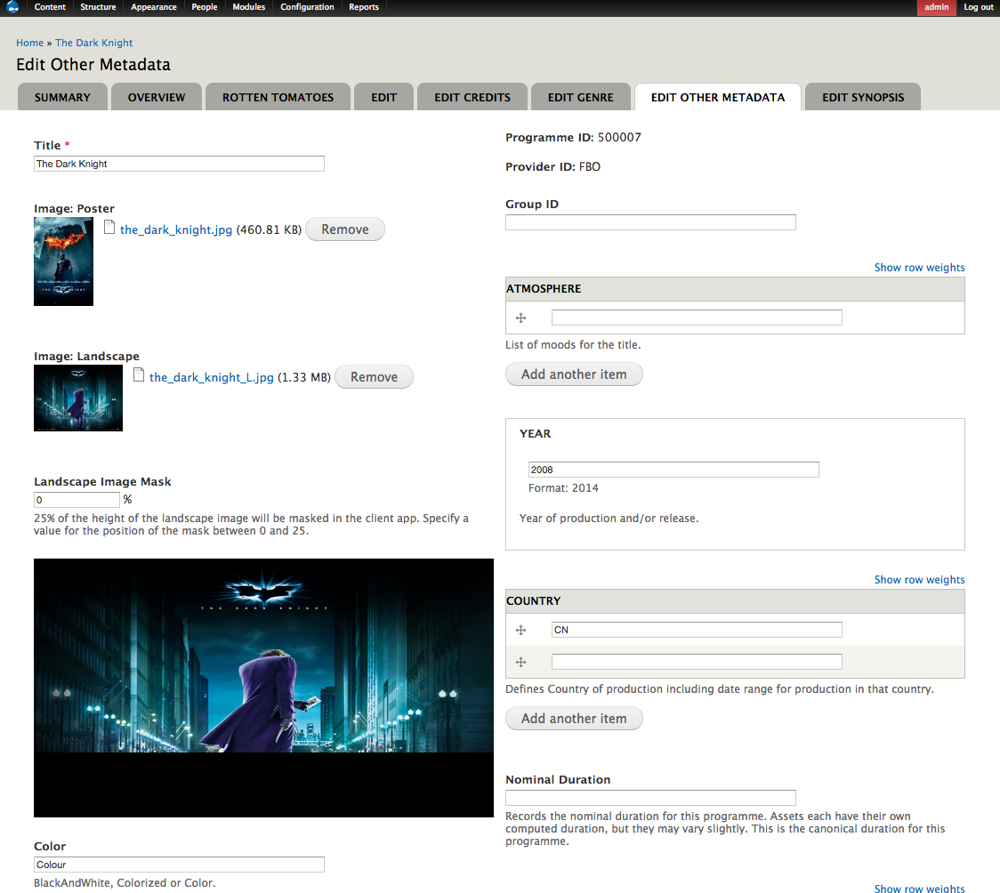

Decoupled Drupal with Silex
Presented by Larry Garfield (@Crell) / Hagen Last
@Crell
- Senior Architect, Palantir.net
- Drupal 8 Web Services Lead
- Drupal Representative, PHP-FIG
- Advisor, Drupal Association
- Loveable pedant
Hagen Last
- Sr. Solutions Architect,

About
- Leading OVP provider
- Founded in 2007
- 300+ employees worldwide
- Global footprint of 200M unique users in 130 countries
- Ooyala works with the most successful broadcast and media companies in the world
Ooyala Customers
CMS for OTT Solution
- Support for structured metadata
- UI to manage metadata
- Publishing workflow
- Curate content
- Lists, Collections
- Banners (Hero)
- Homepage and lists of lists
...and
- Data sync with ooyala backlot
- APIs that work at scale
- Thousands of movies
- Tens of Thousands of users
- Support website and applications
Team Palantir
You know what would be an awesome
platform for this project?

Oh, right, 2013...
So now what?
- Drupal 7 with Services
- Drupal 7 with RestWs
- Symfony
- Silex
Why choose?

Drupal 7
Pro: CMS and page display
Con: Mediocre at REST
Silex
Pro: HTTP handling
Con: Hand-rolled artisinal UI
Communication?
- Drupal data is Drupal's
- Editorial structure != API structure
Answer

Source XML
=>
=>
=>
=>
Client applications
The data model
(aka The Nodes)
Core Domain model
-
Program
- Movie
- Episode
- Useful data
-
Offer
- Buy this
- Refs programs
-
Asset
- Video data
- File in DAM
-
Channel
- EPG records
- Just categorization
Extended domain model
-
Unadorned List
- Curated set of Programs
-
Collection
- Lists with extra images/clips
-
Genres
- More than tags
Application domain model
-
Hero
- "Hero" image in UI
-
String
- TOS
- Instructions
-
Supported device
- Access control
- Filtering
Where does the data
come from?
The Dark Night
When Batman, Gordon and Harvey Dent...
Movie:Action/Adventure
Christian Bale
Importing
- Migrate
- Feeds
- Services
- Custom
Importing

+
Closure-based mapping objects
=
Potentially multiple nodes
HTTP
- Cheat: POST-only, no REST
- 3 page callbacks, common code
- Vanilla Drupal
- Http Basic (over SSL) (simplehttpauth)
One more thing…
- Guzzle
- Guzzle lib for Rotten Tomatoes
- Rotten Tomatoes module
- Map nodes by IMDB ID
- Refetch periodically
Editing
Drupal's got this, right?
...Almost
Content index
Editorial content
Program editing
Program editing

Program editing
Program editing
Program editing
Program editing
Where does the data go?
Export to ElasticSearch
- Lots of preprocessing needed
- Existing contribs weak (2013)
- Rules has too many moving parts
- Exporting some nodes requires others
Another mini-custom OOP system!
When?
- Published == Public
- Public == In Elasticsearch
- Published == In Elasticsearch
So when should it be public?
Publication rules
A Program is publishable when:
- It is curatorially approved
Actually it's a bit more complex than that
Publication rules
An Offer is publishable when:
- It is curatorially approved
- … and the Offer is within its Publication window
- … or it's about to be
Actually it's a bit more complex than that
Publication rules
An Asset is publishable when:
- It is curatorially approved
- … and it has an Offer that is approved
- … or the Offer is within its Publication window
- … or it's about to be
Actually it's a bit more complex than that
Publication rules
It's complicated…
…And potentially expensive
Cron & Queues
Serving the API
- Lightweight microframework
- Same Kernel/Routing as Symfony (and Drupal 8)
- Bare-bones, add what you need
- Elastica (Elasticsearch)
- Guzzle (talk back to Ooyala)
- Nocarrier/Hal (the API format)
- Hypertext Application Language
- IETF Draft
- JSON and XML (but who uses the XML version?)
Silex overview
The HAL Browser
Program resource
Person resource
High availability?
- Silex is stateless: Spin up several, load balance
- Elasticsearch clusters easily (admin story)
- Varnish caching = FAST!
Fast forward a year...
One API, Palantir uninvolved
And growing
- Highly reliable
- Library of thousands of assets
- Thousands of subscribers
- New features added regularly; architecture held up
Larry Garfield
Let's make something good together
Keep tabs on our work at @Palantir
Want to hear about what we're doing?